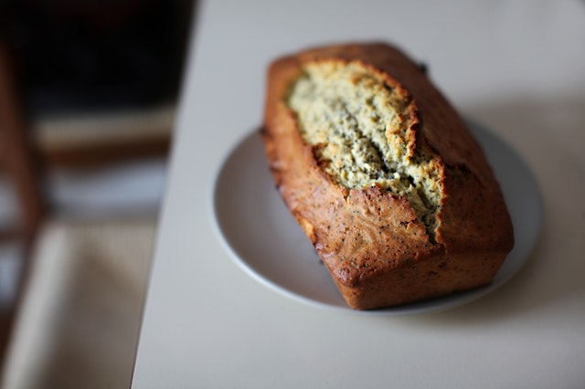

Simple Banana Bread Recipe
You'll never need another banana bread recipe ever again!
Ingredients
Wet
- 1/2 cup butter
- 2 eggs, beaten
- 3 bananas, finely crushed (for serious and extreme moist and delicious, try 4 bananas)
- 1⁄2 teaspoon vanilla (optional)
Dry
- 1 cup sugar
- 1 1⁄2 cups flour
- 1 teaspoon baking soda
- 1⁄2 teaspoon salt
Directions
- Remove odd pots and pans from oven.
- Preheat oven to 350º / 180º.
- Cream together butter and sugar.
- Add eggs and crushed bananas.
- Combine well.
- Sift together flour, soda and salt. Add to creamed mixture. Add vanilla.
- Mix just until combined. Do not overmix.
- Pour into greased and floured loaf pan.
- Bake at 350º / 180º for 55 minutes.
- Keeps well, refrigerated.